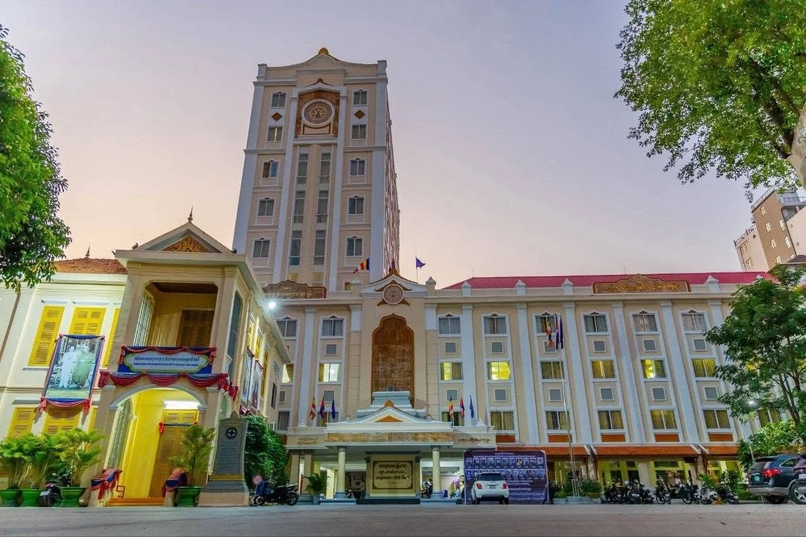

SE-101

ផ្នែកវិទ្យាសាស្ត្រអប់រំ
ផ្នែក
វិទ្យាសាស្ត្រអប់រំ
Department of Educational Science
ស្វែងយល់ពីមុខវិជ្ជាសិក្សា និងសកម្មភាពសិក្សារបស់យើង។
សម្រាប់ព័ត៌មានចូលរៀន សូមចូលរួមក្រុម Telegram។
ផ្នែកវិទ្យាសាស្ត្រអប់រំ
អំពីផ្នែក / ABOUT US
ការសិក្សាអប់រំ
ក្នុងសហគមន៍របស់យើង
ផ្នែកវិទ្យាសាស្ត្រអប់រំ ជាផ្នែកមួយនៃពុទ្ធិកសាកលវិទ្យាល័យព្រះសីហមុនីរាជា (PSBU) ដែលផ្តោតលើការសិក្សា ការអភិវឌ្ឍចំណេះដឹង និងការបណ្តុះជំនាញក្នុងវិស័យអប់រំ។
សាកលវិទ្យាល័យលើកទឹកចិត្តដល់ការបន្តការសិក្សាថ្នាក់ឧត្តមសិក្សា និងការសិក្សាពេញមួយជីវិត ដោយផ្តោតលើចំណេះដឹង សីលធម៌ និងការរួមចំណែកដល់សង្គម។
ការសិក្សា
សហគមន៍
ការអភិវឌ្ឍ
កម្មវិធីសិក្សា
មុខវិជ្ជាសិក្សា
មុខវិជ្ជាសិក្សារបស់ផ្នែកវិទ្យាសាស្ត្រអប់រំ
វិទ្យាសាស្ត្រអប់រំ
កម្មវិធីសិក្សាពេញលេញ ១៧ មុខវិជ្ជា ចែកជា ២ ឆ្នាំ។
17
មុខវិជ្ជា
សម្រាប់ព័ត៌មានសិក្សាបច្ចុប្បន្ន សូមទាក់ទងផ្នែកដោយផ្ទាល់។
ឆ្នាំទី១
PE-101
ទស្សនវិជ្ជាអប់រំ
SCE-101
សង្គមវិទ្យាអប់រំ
ME-101
គ្រប់គ្រងអប់រំ
DP-102
ការអភិវឌ្ឍកម្មវិធីសិក្សា
LE-102
ភាសាអង់គ្លេសអប់រំ
PLE-102
គោលនយោបាយអប់រំ
DPHE-102
ការអភិវឌ្ឍកម្មវិធីអប់រំនៅឧត្តមសិក្សា
TE-103
វាយតម្លៃអប់រំ
ឆ្នាំទី២
HWE-103
ប្រវត្តិអប់រំពិភពលោក
PE-103
ផែនការអប់រំ
ETM-103
និន្នាការអប់រំទំនើប (ETM)
THE-104
ទ្រឹស្តីអប់រំ
MT-104
សីលធម៌វិជ្ជាជីវៈគ្រូបង្រៀន
EEL-104
ភាសាបរទេសអប់រំ
EP-104
វិទ្យាសាស្ត្រនយោបាយអប់រំ
WRE-104
សរសេរបាយការណ៍ និងប្រឡងបញ្ចប់
បទពិសោធន៍សិក្សា / LEARNING TOGETHER
ហេតុអ្វីជ្រើសរើសសិក្សាជាមួយយើង?
Classroom learning.
Shared experiences. A connected community.
ការសិក្សាក្នុងថ្នាក់
សកម្មភាពសិក្សា និងការធ្វើបទបង្ហាញក្នុងថ្នាក់។
សហគមន៍និស្សិត
ការចូលរួម និងការរៀនសូត្រជាមួយគ្នា។
ងាយស្រួលសាកសួរ
សាកសួរព័ត៌មានចូលរៀនដោយផ្ទាល់ពីផ្នែក។
ការអភិវឌ្ឍចំណេះដឹង
ស្វែងយល់ពីគោលគំនិតអប់រំ និងការសិក្សាពេញមួយជីវិត។
សកម្មភាព / DEPARTMENT ACTIVITIES & ACADEMIC LIFE
សកម្មភាព និងជីវិតសិក្សារបស់ផ្នែក
រូបភាពពីការសិក្សា ការពិភាក្សា និងសកម្មភាពរួមរបស់និស្សិត។
សកម្មភាពសិក្សាក្នុងថ្នាក់
និស្សិតចូលរួមសិក្សា ពិភាក្សា និងទទួលការបង្រៀនពីសាស្ត្រាចារ្យក្នុងថ្នាក់រៀន។
ការចូលរួមរបស់និស្សិត
និស្សិតចូលរួមយ៉ាងសកម្មក្នុងការសិក្សា និងសកម្មភាពអប់រំរបស់ផ្នែក។
កិច្ចប្រជុំ និងការពិភាក្សា
សកម្មភាពពិភាក្សា និងផ្លាស់ប្តូរយោបល់រវាងសាស្ត្រាចារ្យ និងនិស្សិត។
សកម្មភាពរួមរបស់និស្សិត
ការចូលរួមក្នុងសកម្មភាពរួម ដើម្បីពង្រឹងសាមគ្គីភាព និងទំនាក់ទំនងក្នុងសហគមន៍សិក្សា។
ការជួបសំណេះសំណាល និងចែករំលែកបទពិសោធន៍
សកម្មភាពជួបសំណេះសំណាល និងចែករំលែកចំណេះដឹងពីថ្នាក់ដឹកនាំ និងសាស្ត្រាចារ្យ។
កម្មវិធីផ្លូវការ និងសកម្មភាពសាកលវិទ្យាល័យ
ការចូលរួមក្នុងកម្មវិធីផ្លូវការ និងសកម្មភាពសំខាន់ៗរបស់សាកលវិទ្យាល័យ។
ការចុះឈ្មោះ / YOUR NEXT STEP
ចាប់ផ្តើមការសិក្សា
ជាមួយយើង
សម្រាប់ព័ត៌មានបន្ថែម និងការចុះឈ្មោះ សូមចូលក្រុម Telegram ផ្លូវការរបស់ផ្នែក។
ចុះឈ្មោះតាម Telegram
ចុចដើម្បីបើកក្រុម Telegram
ទំនាក់ទំនង / GET IN TOUCH
យើងរីករាយផ្តល់ព័ត៌មាន
សាកសួរព័ត៌មានកម្មវិធីសិក្សា និងការចុះឈ្មោះពីផ្នែកដោយផ្ទាល់។
ពុទ្ធិកសាកលវិទ្យាល័យព្រះសីហមុនីរាជា
Preah Sihamoniraja Buddhist University
អាសយដ្ឋាន
វត្តស្វាយពពែ សង្កាត់ទន្លេបាសាក់
ខណ្ឌចំការមន រាជធានីភ្នំពេញ
ក្រុម Telegramចូលក្រុម Telegram
ទំនាក់ទំនងតាម Telegram081 250 322